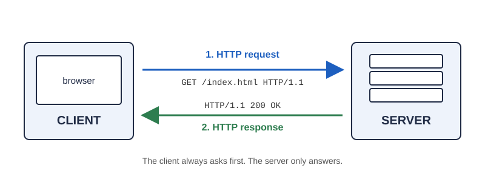

The Evolution of HTTP
How the Web Communicates
A research project by Emmanuel Orji · IT 3203, Fall 2026
Introduction
Every time you open a website, your browser and a web server have a short conversation. The rules for that conversation are called HTTP, the HyperText Transfer Protocol. HTTP is how a browser asks a server for a page, and how the server answers.
This site covers how HTTP works, where it came from, and how it has changed since Tim Berners-Lee created it at CERN around 1990. The main thing I learned while researching it is that HTTP has never really changed what it says. A client still asks for a resource and a server still answers with a status code, headers and content. What has changed over more than thirty years is how fast and how securely that conversation travels across the network.

Why HTTP Is Important
The Internet is the network of cables, Wi-Fi and mobile links that moves data between computers. The World Wide Web is one service that runs on top of it, and HTTP is the protocol that makes the Web work. Without an agreed set of rules, a phone made by one company could not load a page from a Linux server made by another.
- Every page, image, video and form you use in a browser travels as HTTP messages.
- Mobile apps, smart devices and cloud services also talk to each other over HTTP.
- HTTPS (HTTP with encryption) is what protects passwords and payment details online.
- HTTP is an open standard, so no single company owns it and anyone can build on it.
Five Versions in About Thirty Years
HTTP has been rewritten several times. Each version kept the same basic idea and fixed problems with the one before it.
- HTTP/0.9
- →
- HTTP/1.0
- →
- HTTP/1.1
- →
- HTTP/2
- →
- HTTP/3
The early versions (0.9, 1.0 and 1.1) added meaning to the protocol: headers, status codes, more methods and reusable connections. The newer versions (HTTP/2 and HTTP/3) did not change what the messages mean. They changed how the messages are delivered so pages load faster and more reliably. The full story is on the Evolution page.
Key Terms
- Client
- The program that sends the request, usually a web browser.
- Server
- The machine that stores or creates the resource and sends it back.
- Request / Response
- The message the client sends, and the answer the server returns.
- Status Code
- A three-digit number reporting the result, like 200 (OK) or 404 (Not Found).
- Header
- A name-and-value line with extra information about a message.
- HTTPS / TLS
- HTTP sent through an encrypted TLS connection so others cannot read it.
Table of Contents
- How HTTP Works – clients, servers, requests, responses, methods, status codes and headers.
- Evolution of HTTP – from CERN in 1989 to HTTP/3 and QUIC in 2022.
- Key Concepts – seven ideas you need to understand HTTP.
- References & Resources – the sources used for this research.
- About – about me and about this project.